Equipa Projeto Ciclo XV
Coordenação
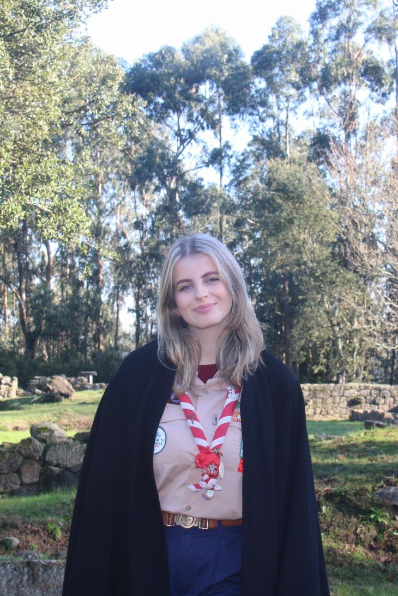
Inês Ferreira
1283 - Alvarelhos
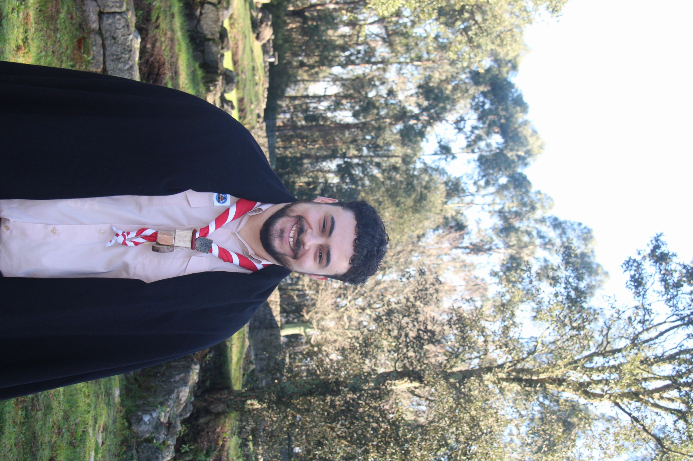
Ricardo Almeida
628 - Santo Tirso
Animação
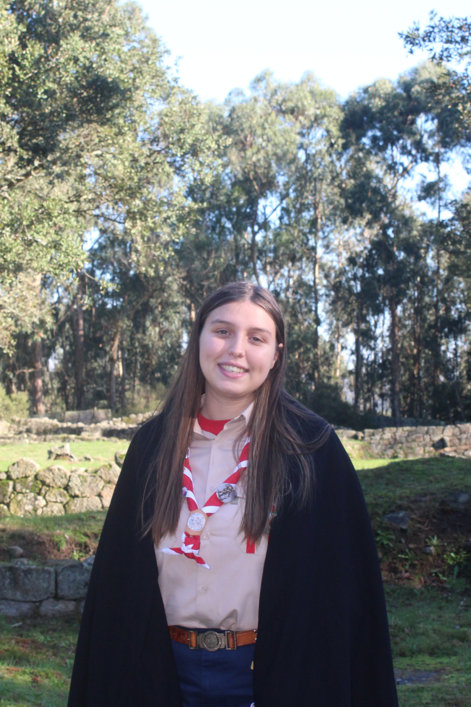
Mariana Moreira
245 - Vilarinho
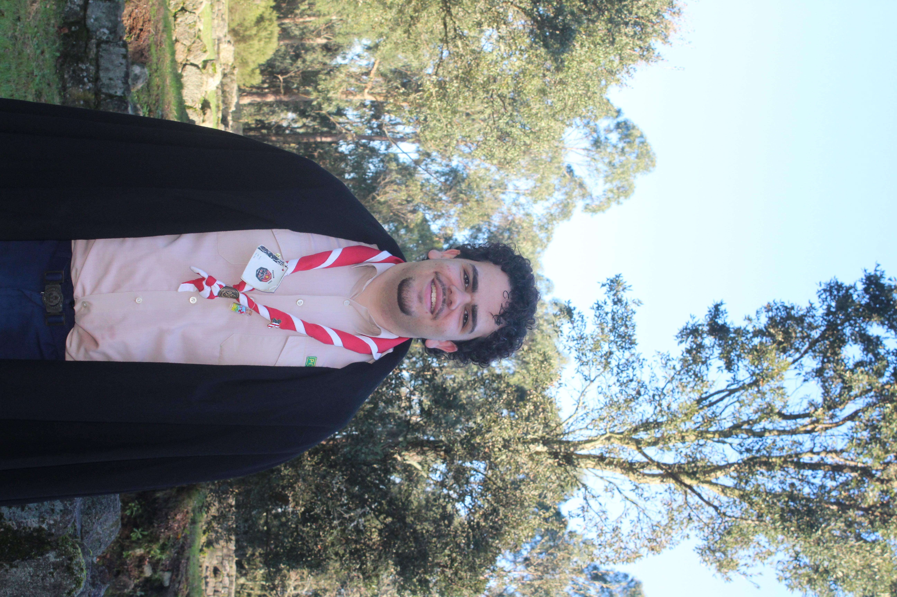
Manuel Escaleira
447 - Santiago de Bougado
Comunicação
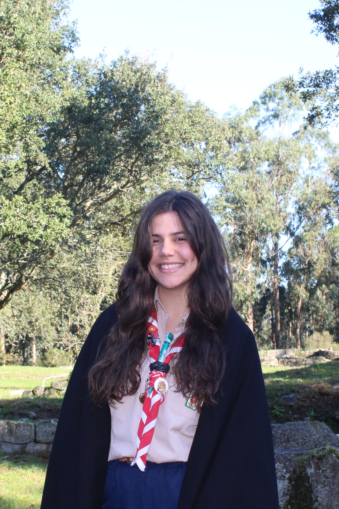
Ana Luísa Costa
435 - Santa Eulália
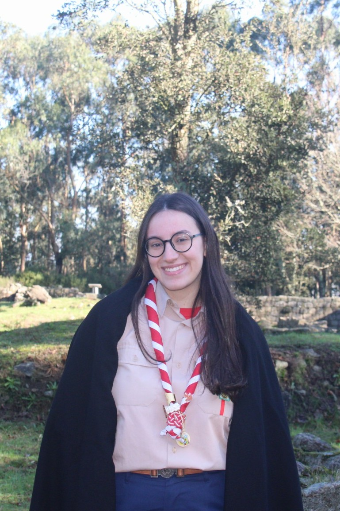
Joana Carvalhal
447 - Santiago de Bougado
Fórum
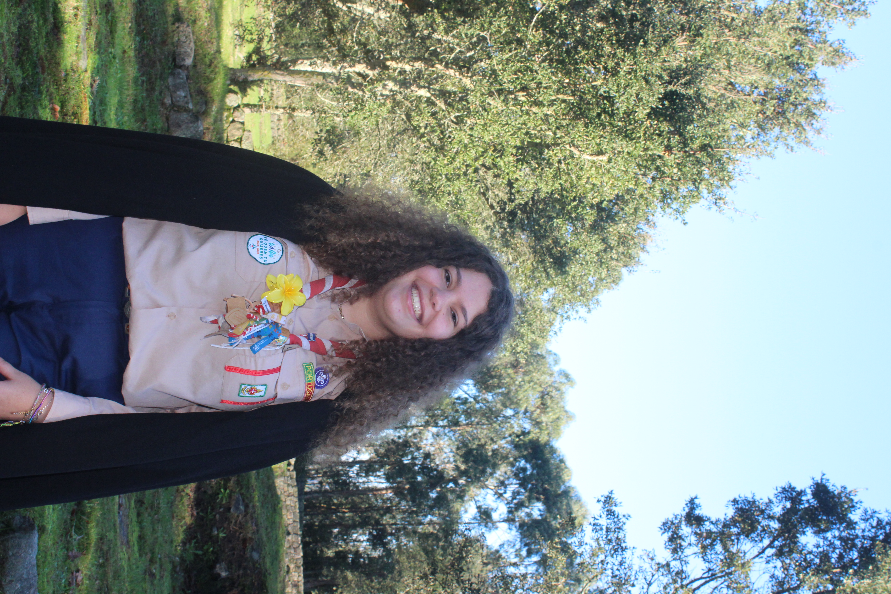
Margarida Silva
503 - Fontiscos
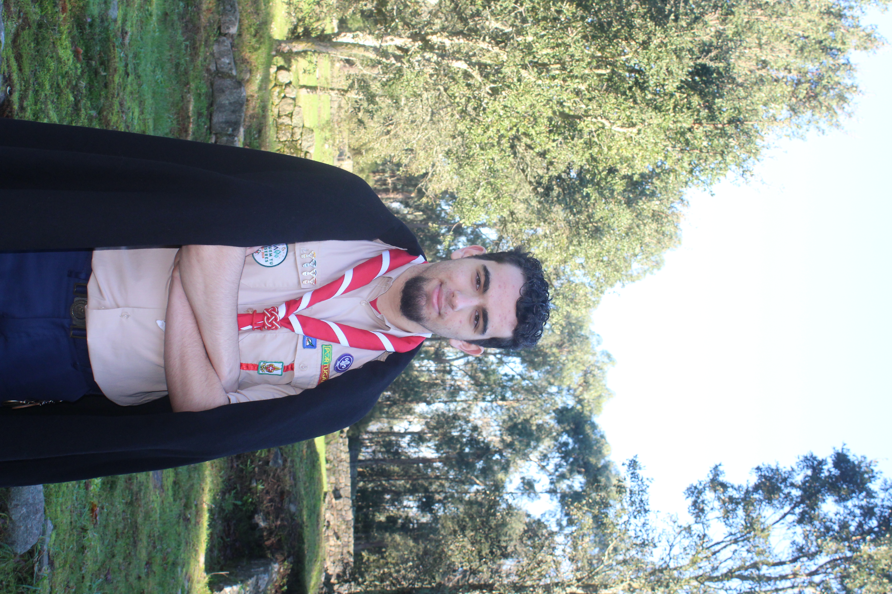
Tomás Morais
447 - Santiago de Bougado
Logística
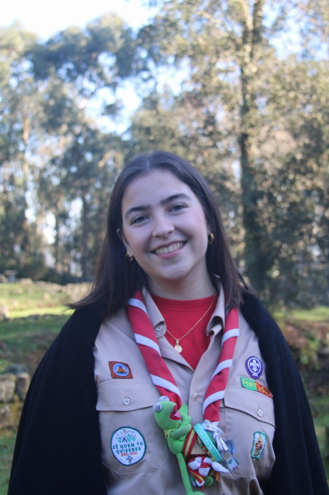
Beatriz Machado
503 - Fontiscos
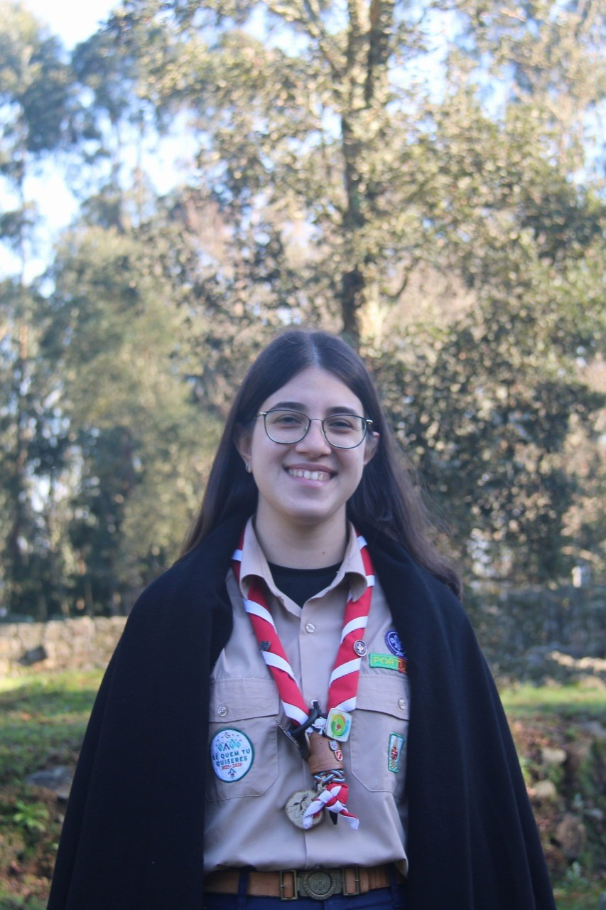
Maria Fonseca
628 - Santo Tirso
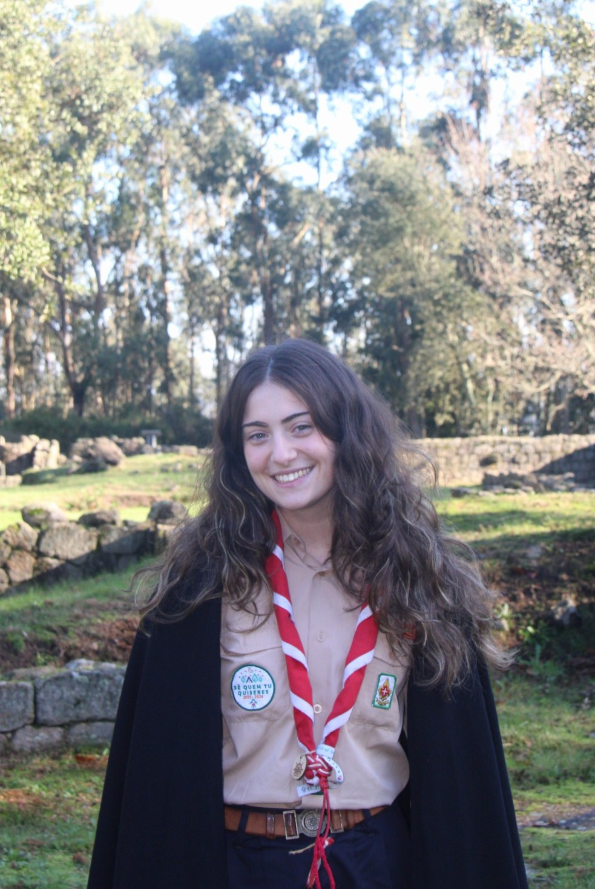
Margarida Sousa
399 - Rebordões
Observadora
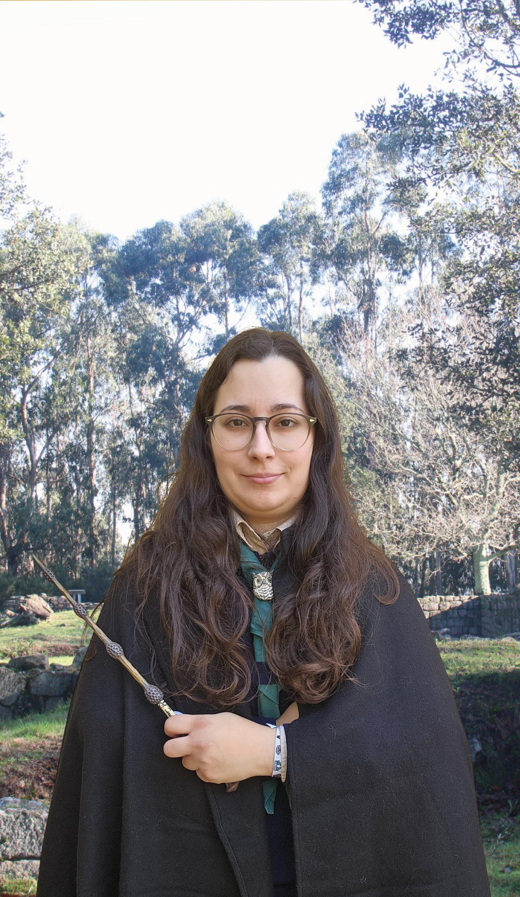
Ana Fernandes
503 - Fontiscos
Embaixador
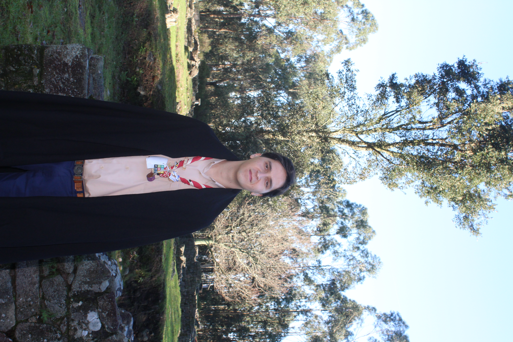
Henrique Silva
447 - Santiago de Bougado
Horário Cenáculo
Sexta-feira
Sábado
Domingo
Cânticos da Eucaristia
Cântico Inicial - Se crês em Deus
Se crês em Deus
Se acreditas que Ele há-de voltar.
Segue o caminho que Jesus te veio ensinar,
Então verás que a vida se pode tornar melhor.
Cantarei, cantarei, o que Deus me veio ensinar.
Que a maneira de chegar ao céu
É a amar, é a amar,
É a amar, é a amar
O pobre, o rico, e o pecador
E tudo o que nesta vida é querido do Senhor.
Se Deus quiser
Hei-de deixar de pensar em mim,
E então roubar tempo ao tempo para O adorar
Serei feliz e comigo será tudo o que cantar.
Refrão
Ato Penitencial - Perdoa Senhor
Perdoa Senhor o nosso dia,
A ausência de gestos corajosos
A fraqueza dos atos consentidos
A vida nos momentos mal amados.
Perdoa o espaço que te não demos
Perdoa porque não nos libertámos
Perdoa as correntes que pusemos
Em Ti, Senhor, porque não ousámos.
Contudo faz-nos sentir:
Perdoar é esquecer a antiga guerra
E partindo recomeçar de novo
Como o sol que sempre beija a terra.
Salmo Responsorial
Tu meu Deus a quem busco
Sede de Ti tenho na alma
Qual terra seca, qual terra seca
Sem água.
1. Porque o Teu amor é melhor que a vida
Meus lábios querem cantar para ti
E assim quero com a vida bendizer-te
E levantar as mãos abertas para ti.
2. Quantas vezes de noite, quando o sono se vai penso em Ti
E tranquilo me encontro à Tua sombra.
Como uma criança, minha alma se aperta contra Ti
E segura a Tua mão me sustém.
3. Uma só coisa Te peço, Senhor, uma coisa estou buscando:
Viver em Tua casa para sempre e conhecer-te.
Tu sabes quem eu sou
Tu sabes o que tenho, o que eu anseio,
O que eu não sou, o que eu não tenho.
Aleluia
Ouve esta palavra
Que profiro sobre ti
É uma mensagem
Ao povo que escolhi
Procura-me e viverás
Sente a voz dentro de ti
É assim que fala
O teu Senhor.
Aleluia, Aleluia
Aleluia, Aleluia
Aleluia, Aleluia
Aleluia, Aleluia
Ofertório - Tomo este Pão
Tomo este pão e este vinho em memória do meu Salvador
Tomo este pão e este vinho são o corpo e sangue do Senhor.
Bebendo o Teu sangue neste cálice, bebo o sangue da nova aliança
O que derramaste pelos homens para remissão e esperança.
Tomando o pão que é o Teu corpo, comungo a Igreja transcendente
Faz Teu corpo eterna minha alma, pela fé me salva para sempre.
Santo
Santo, Santo, Hossana!
Santo, Santo, Hossana!
Hossana, eh, hossana, eh,
Hossana a Cristo Senhor!
Hossana, eh, hossana, eh,
Hossana a Cristo Senhor!
O céu e a terra proclamam, tua glória Senhor.
O céu e a terra proclamam, tua glória Senhor.
Refrão
Bendito Aquele que vem em nome do Senhor!
Bendito Aquele que vem em nome do Senhor!
Refrão
Cordeiro
Faz a paz, escolhe o amor
P'ro mundo ser melhor.
Faz a paz, escolhe o amor
P'ro mundo ser melhor.
Abraça os homens, são teus irmãos
E dá-lhes o coração.
Abraça os homens, são teus irmãos
E dá-lhes o coração.
Comunhão - Pão do Céu
Pão do Céu, pão de Deus, vida em mim és Senhor Jesus.
No caminho da vida és o pão que dá força e luz.
Quem comer deste pão viverá por mim,
Quem deste vinho beber, viverá no amor
E feliz reinará com o seu Senhor.
Bom pastor és caminho seguro verdade e vida.
Quem te segue não anda no mundo perdido e só.
Nem a vida, ou a morte, ou algum poder,
Do seu amor poderá jamais separar,
Para a vida sem fim ressuscitará.
Eu sou o pão da vida.
Eu sou a ressurreição.
Tomai e comei este é o meu corpo:
Pão de vida e unidade.
Permanecei em mim
Eu a videira vós os ramos.
Tomai e bebei este é o meu sangue
Para a vossa salvação.
Pão do céu é o maná que nos dás com sabor a ti,
És a força que alenta o nosso peregrinar.
Quem tem sede há-de em ti encontrar a fonte
Da alegria sem fim e da tua paz
E brotará dele um rio de água-viva.
Para quem hemos de ir se tu és o Santo de Deus.
As palavras, Senhor, que nos dás são de vida eterna.
Quem te segue não se perderá na noite
Em caminhos e vales de solidão
Pois terá luz da vida, vida verdadeira.
Refrão
Ação de Graças 1
Esta sede de te encontrar em mim
De correr p'ra Ti, de estar junto de Ti
Guias pelos vales o decurso do meu rio
Única razão és Tu, o único sustento Tu
A minha vida existe porque existes Tu.
Tudo gira à Tua volta em função de Ti
Não importa quando, onde e o porquê. (Bis)
Gira o firmamento sem nunca ter paz
Mas existe uma ponta a brilhar p'ra mim
A estrela polar que guia os meus passos
A estrela polar és Tu, estrela segura Tu
A minha vida existe porque existes Tu.
Refrão
Brilha a Tua luz no centro do meu ser
Dás sentido à vida que em mim nasceu
Tudo o que farei será somente amor
Único sustento és Tu, a estrela polar Tu
A minha vida existe porque existes Tu
Refrão
Ação de Graças 2
Ó Senhora minha, ó minha Mãe
Eu me ofereço todo a Vós
E em prova da minha devoção para convosco
Vos consagro neste dia e para sempre
Os meus olhos, os meus ouvidos,
a minha boca, o meu coração
E inteiramente, todo o meu ser. (Bis)
E porque assim sou Vosso, ó incomparável Mãe
Guardai-me e defendei-me como coisa e propriedade vossa.
Cântico Final - Sentido Novo
Peço ao tempo que corra devagar
Um lugar a que possa voltar
Das montanhas surge a luz do mundo
Dar sentido novo ao amanhã
O Sol já despertou a vontade de servir
Descobri por fim o que me faz feliz
É simples, é assim, mas existe
O meu lado cego que me faz seguir
Peço ao tempo que corra devagar
Cada passo no seu espaço, o tempo no seu lugar (x4)
Então vai em frente
De lenço, sente!
Contigo carregas
Vontade ao peito.
Então vai em frente
De lenço, sente!
Contigo carregas...
Peço ao tempo que corra devagar
Cada passo no seu espaço, o tempo no seu lugar (x7)
Está na hora de recomeçar
Novos rostos poder abraçar
A chama acende cada um de nós
Com liberdade...